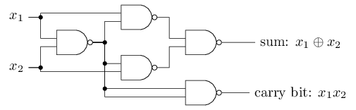

Notes for the book.
Source code for the book.
Chapter 1: Using neural nets to recognize handwritten digits
Perceptrons

$$\begin{eqnarray}
\mbox{output} & = & \left{ \begin{array}{ll}
0 & \mbox{if } \sum_j w_j x_j \leq \mbox{ threshold} \
1 & \mbox{if } \sum_j w_j x_j > \mbox{ threshold}
\end{array} \right.
\tag{1}\end{eqnarray}$$
Network of perceptrons

First, simplify notation, $w \cdot x \equiv \sum_j w_j x_j$
Move, threshold into the network as bias, $b \equiv -\mbox{threshold}$
$$\begin{eqnarray}
\mbox{output} = \left{
\begin{array}{ll}
0 & \mbox{if } w\cdot x + b \leq 0 \
1 & \mbox{if } w\cdot x + b > 0
\end{array}
\right.
\tag{2}\end{eqnarray}$$
Neural Nets as Logic Gates
This network represent a NAND Gate

NAND gates can do arbitrary computations,

And so can the perceptrons,

This is reassuring, as this shows that perceptron can be as powerful as any computing device. Bit is disappointing as it makes the perceptrons just another type of NAND.
However, these perceptrons can learn.
Sigmoid Neurons
We want our network to do this,

we would be able to learn if we repeat this process gradually improving our weights.
However, perceptrons don’t behave that way, changing the weights or bias may only completely flip the output, say 0 to 1. This makes it difficult to do gradual improvements to our network.
Enter sigmoid,
$$\begin{eqnarray}
\sigma(z) \equiv \frac{1}{1+e^{-z}}.
\tag{3}\end{eqnarray}$$
and, $\sigma(z) \in [0,1]$
Output of sigmoid neuron $ = \sigma(w \cdot x+b)$
Which is a smoothed out version of the step function represented by perceptrons.
Using come calculus,
$$\begin{eqnarray}
\Delta \mbox{output} \approx \sum_j \frac{\partial , \mbox{output}}{\partial w_j}
\Delta w_j + \frac{\partial , \mbox{output}}{\partial b} \Delta b,
\tag{5}\end{eqnarray}$$
$\Delta \mbox{output}$ is a linear function with respect to $\Delta w_j$ and $\Delta b$.
This makes it easier to figure out how to change the weights to achieve some output.
The architecture of neural networks
Feedforward neural network
A simple network to classify handwritten digits

Learning with gradient descent
The dataset.
We use the following quadratic cost function, also called the mean squared error or just MSE,
$$\begin{eqnarray} C(w,b) \equiv
\frac{1}{2n} \sum_x | y(x) - a|^2.
\tag{6}\end{eqnarray}$$
To minimize this function, we use gradient descent,
Gradient descent with two variables,

We could use calculus to find the minima analytically, but it would become a nightmare as soon as the number of variables go up.
So, let’s start rolling a ball down the valley,..
$$\begin{eqnarray} \Delta C \approx \frac{\partial C}{\partial v_1} \Delta v_1 + \frac{\partial C}{\partial v_2} \Delta v_2. \tag{7}\end{eqnarray}$$
We also define a gradient vector $\nabla C$,
$$\begin{eqnarray}
\nabla C \equiv \left( \frac{\partial C}{\partial v_1},
\frac{\partial C}{\partial v_2} \right)^T.
\tag{8}\end{eqnarray}$$
With this defined, we can rewrite,
$$\begin{eqnarray}
\Delta C \approx \nabla C \cdot \Delta v.
\tag{9}\end{eqnarray}$$
This equation lets us choose $\Delta v$ so as to make $\Delta C$ negative.
$$\begin{eqnarray}
\Delta v = -\eta \nabla C,
\tag{10}\end{eqnarray}$$
where $\eta$ is a small, positive parameter (known as the learning rate).
Then, we can combine $(9)$ and $(10)$ to give, $\Delta C \approx -\eta \nabla C \cdot \nabla C = -\eta |\nabla C|^2$.
So, we will use $(10)$ to compute $\Delta v$,
$$\begin{eqnarray}
v \rightarrow v' = v -\eta \nabla C.
\tag{11}\end{eqnarray}$$
doing this until - we hope - we reach a global minimum.
This can also be written as,
$$\begin{eqnarray}
w_k & \rightarrow & w_k' = w_k-\eta \frac{\partial C}{\partial w_k} \tag{16}\
b_l & \rightarrow & b_l' = b_l-\eta \frac{\partial C}{\partial b_l}.
\tag{17}\end{eqnarray}$$
Calculating all the gradients can become slow,
So we do that in batches, using stochastic gradient descent,
We randomly choose a mini-batch of samples from the training inputs, $X_1, X_2, \ldots,X_m$
$$\begin{eqnarray}
\frac{\sum_{j=1}^m \nabla C_{X_{j}}}{m} \approx \frac{\sum_x \nabla C_x}{n} = \nabla C,
\tag{18}\end{eqnarray}$$
So now our update rule becomes,
$$\begin{eqnarray}
w_k & \rightarrow & w_k' = w_k-\frac{\eta}{m}
\sum_j \frac{\partial C_{X_j}}{\partial w_k} \tag{20}\
b_l & \rightarrow & b_l' = b_l-\frac{\eta}{m} \sum_j \frac{\partial C_{X_j}}{\partial b_l}, \tag{21}\end{eqnarray}$$
We do this update for all the training data, dividing it into batches. This completes a single epoch.
Implementing our network to classify digits
Clone the repo,
git clone https://github.com/mnielsen/neural-networks-and-deep-learning.git
We will be using 10,000 images from the test set as our validation set.
This will be used for hyper-parameter tuning.
The Network class
class Network(object):
def __init__(self, sizes):
self.num_layers = len(sizes) # Number of layers
self.sizes = sizes # Number of neurons in the respective layer
self.biases = [np.random.randn(y, 1) for y in sizes[1:]]
self.weights = [np.random.randn(y, x)
for x, y in zip(sizes[:-1], sizes[1:])]
To create a Nueral Net with 2 neurons in the first layer, 3 neurons in the second layer, and 1 neuron in the final layer,
net = Network([2, 3, 1])
It then generates random initial bias and weights for the layers.
We can calculate the activations of a given layer by,
$$\begin{eqnarray}
a' = \sigma(w a + b).
\tag{22}\end{eqnarray}$$
Here we are vectorizing out operations to denote(and compute) them compactly. So, we can define the sigmoid activation in our code,
def sigmoid(z):
return 1.0/(1.0+np.exp(-z))
and the feedforward function in the Network class,
def feedforward(self, a):
"""Return the output of the network, if `a` is the input"""
for b, w in zip(self.biases, self.weights):
a = sigmoid(np.dot(w, a) + b)
return a
Now, the main thing that we want our network to do is to learn, so we’ll define an SGD method
def SGD(self, trainig_data, epochs, mini_batch_size, eta, test_data=None):
"""Train the neural network using mini-batch stochastic gradient descent.
The "training_data" is a list of tuples "(x,y)" representing the training inputs
and the desired outputs. If "test_data" is provided then the network will be evaluated
against then test data after each epoch. This is good for tracking the progress,
but slows things down"""
if test_data: n_test = len(test_data)
n = len(trainig_data)
for j in xrange(epochs):
random.shuffle(trainig_data)
mini_batches = [
trainig_data[k:k+mini_batch_size]
for k in xrange(0,n,mini_batch_size)]
for mini_batch in mini_batches:
self.update_mini_batch(mini_batch, eta)
if test_data:
print ("Epoch {0}:{1}/{2}".format(j, self.evaluate(test_data), n_test))
else:
print("Epocj {0} complete.".format(j))
In the above code the training data is randomly divided into mini batches and for each batch the gradient step is applied using self.update_mini_batch(mini_batch, eta).
def update_mini_batch(self, mini_batch, eta):
"""Update the network's weights and biases by applying
gradient descent using backpropogation to a single mini batch.
The "mini_batch" is a list of tuples "(x,y)", and "eta" is
the learning_rate."""
nabla_b = [np.zeros(b.shape) for b in self.biases]
nabla_w = [np.zeros(w.shape) for w in self.weights]
for x, y in mini_batch:
delta_nabla_b, delta_nabla_w = self.backprop(x, y)
nabla_b = [nb + dnb for nb, dnb in zip(nabla_b, delta_nabla_b)]
nabla_w = [nw + dnw for nw, dnw in zip(nabla_w, delta_nabla_w)]
self.weights = [w-(eta/len(mini_batch))*nw
for w, nw in zip(self.weights, nabla_w)]
self.biases = [b-(eta/len(mini_batch))*nb
for b, nb in zip(self.biases, nabla_b)]
Here, most of the work is done by the line,(which is explained in the next article in the series)
delta_nabla_b, delta_nabla_w = self.backprop(x, y)
We can now load some data using the helper scripts in the repo,
>>> import mnist_loader
>>> training_data, validation_data, test_data = \
... mnist_loader.load_data_wrapper()
And then create a network,
>>> import network
>>> net = network.Network([784, 30, 10])
Finally, we can use SGD to learn from the MNIST data,
>>> net.SGD(trainig_data, epochs=30, mini_batch_size=10, eta=3.0, test_data=validation_data)
Here is the output you should expect,
Epoch 0: 9129 / 10000
Epoch 1: 9295 / 10000
Epoch 2: 9348 / 10000
...
Epoch 27: 9528 / 10000
Epoch 28: 9542 / 10000
Epoch 29: 9534 / 10000
That is 95.42 percent accuracy in 28 epochs.
Tuning the hyperparameters
This can be challenging. The art of debugging is required here.
The current state-of-the-art for this dataset is 99.79 percent.
Towards Deep Learning
How does the network does what it does?
Possibly by, breaking down the problem into subproblems and finding those answers.
But, this breaking down is done by the network automatically while learning, and we don’t really have a say in it.